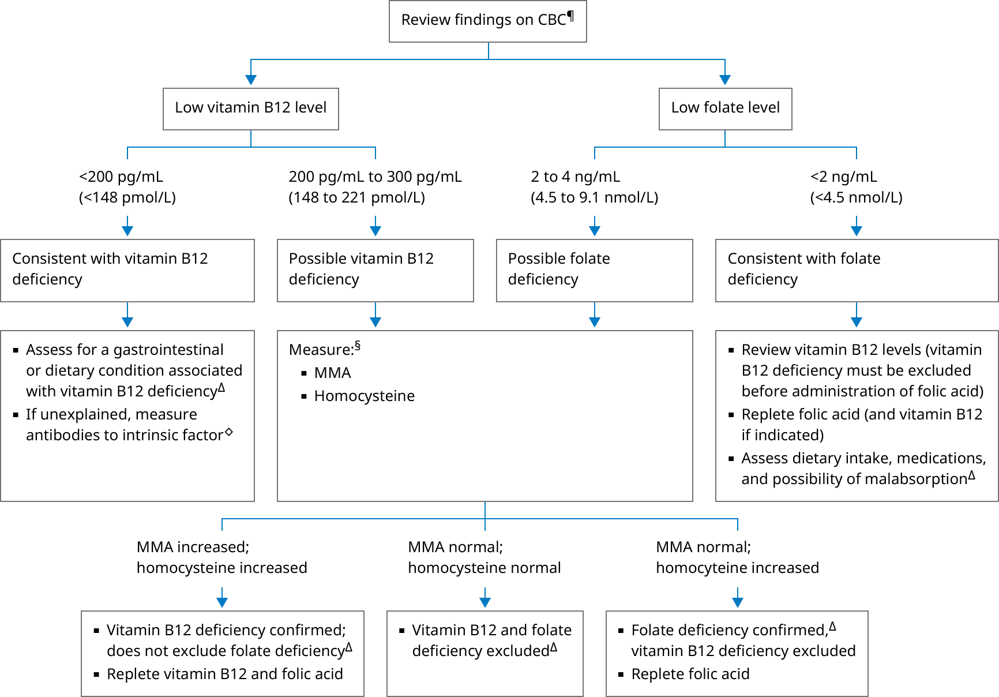

CBC: complete blood count; MMA: methylmalonic acid.
* The normal vitamin B12 reference range is usually >300 pg/mL (>221 pmol/L) and for serum folate >4 ng/mL (>9.1 nmol/L). Interpretation of a specific abnormal test result should be based upon the reference range reported with that result.
¶ A diagnosis of B12 deficiency does not eliminate the possibility of folate deficiency or the possibility of coexisting causes of anemia. Likewise, a diagnosis of folate deficiency does not eliminate the possibility of concomitant vitamin B12 deficiency.
Δ Additional evaluation for an underlying condition depends on clinical findings.
◊ Testing for autoantibodies to intrinsic factor is used to identify pernicious anemia.
§ MMA and homocysteine are intermediates in homocysteine and folate metabolism.